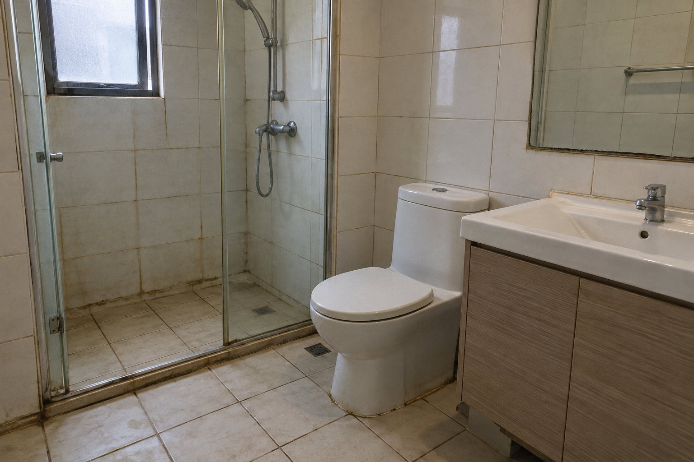
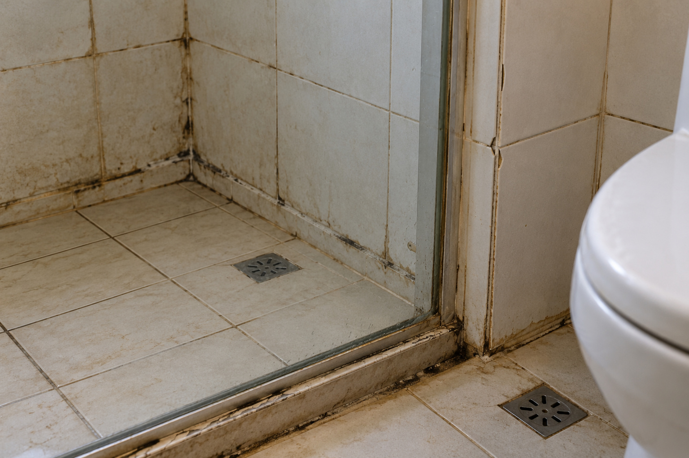
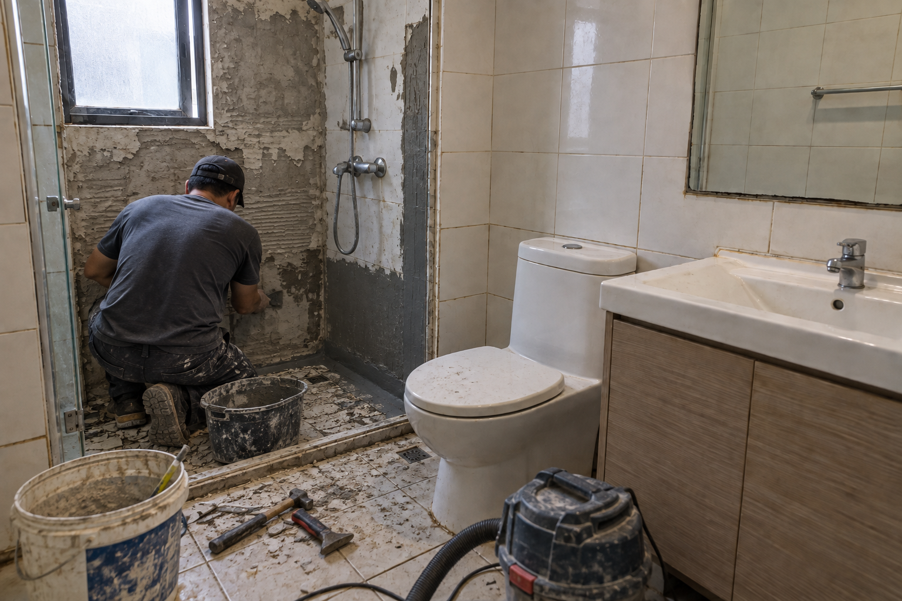
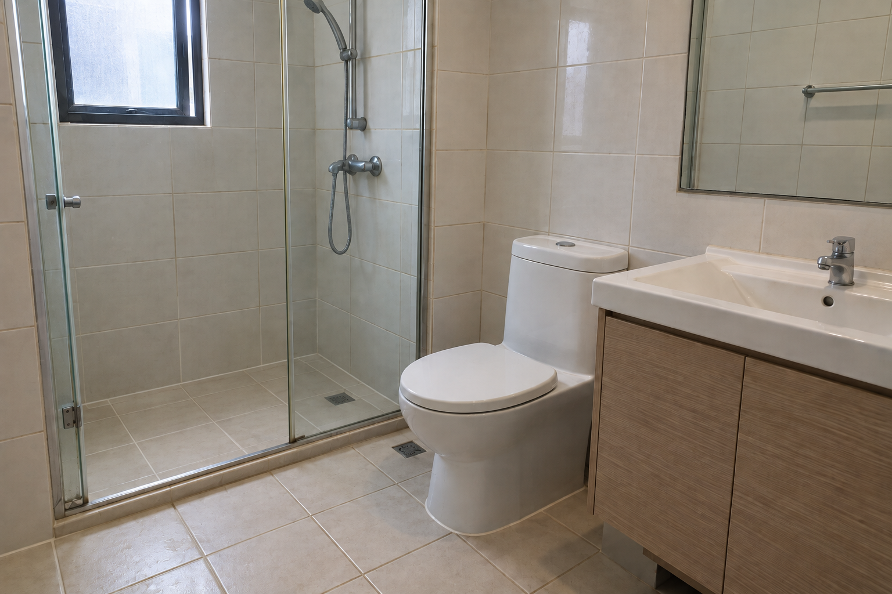

Recent project
Shower resealing & tile grout repair
A photographic sequence documenting surface shower resealing and tile grout repair.
The project
Shower resealing and tile grout repair
These images show a bathroom with worn grout and sealant around the shower area. Relevant enquiry contexts include split shower silicone and missing tile grout. This page concerns surface resealing and grout repair; signs of a deeper leak or failed waterproofing need assessment by the appropriate specialist. Clear photos of the affected tiles, grout lines, shower screen edges and any signs of moisture help our team understand the work you need.
Project gallery
Shower resealing details shown




Start your request
Tell us what needs attention
Share your bathroom repair task and Perth property location.